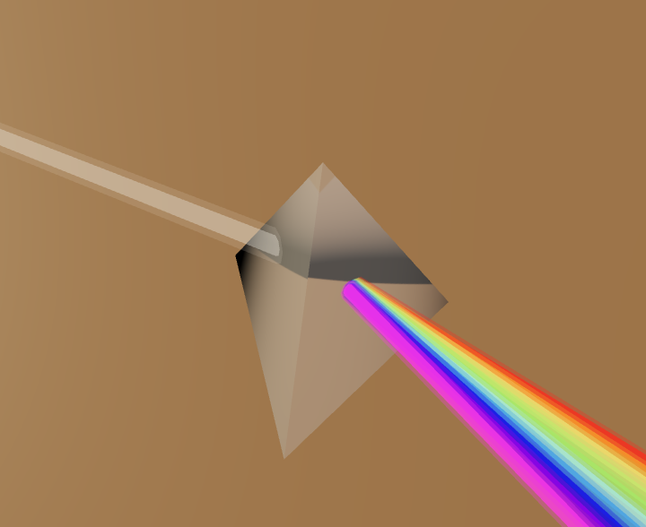
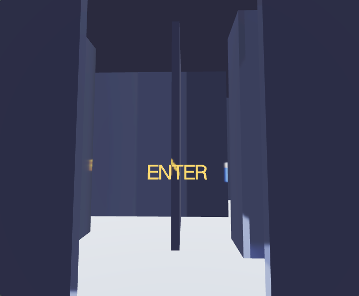
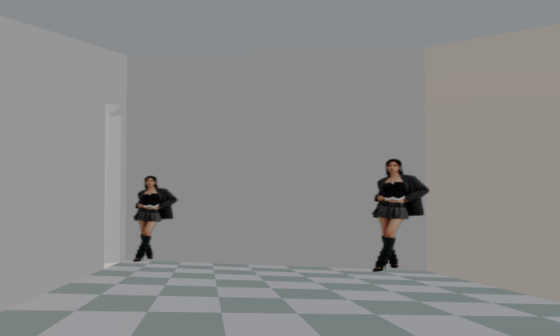
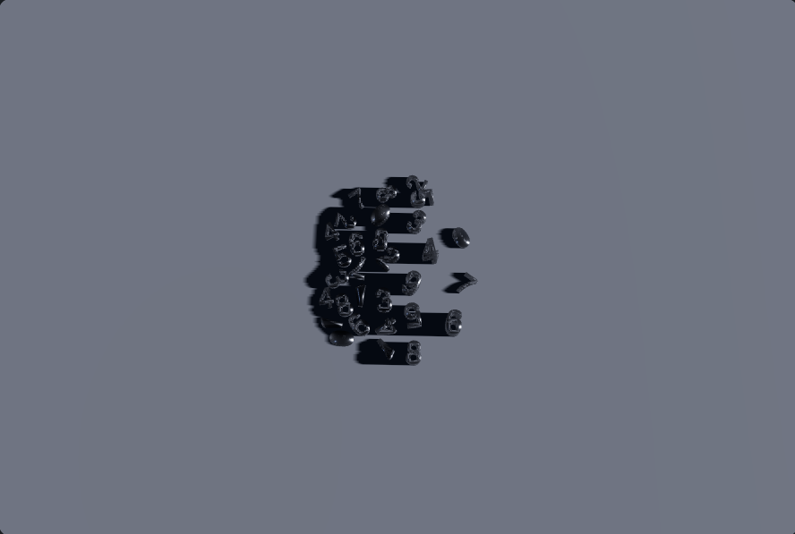
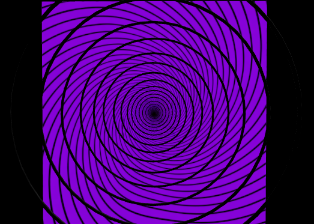
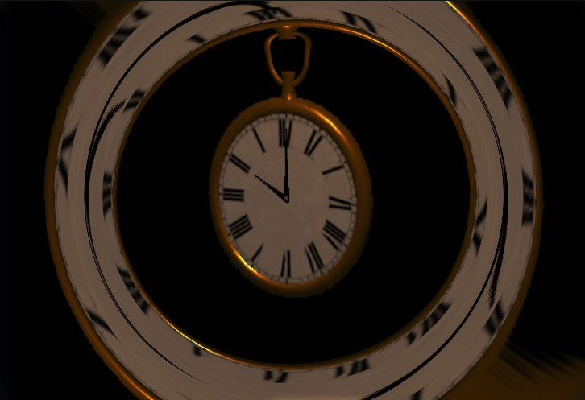

Випускна робота
«Імітація фізики світла у веб-проєкті
“Віртуальний музей світлових ілюзій”»
Виконала:
ліцеїстка 11-Г-1 класу
Караван Софія
Керівник роботи:
Викладач кафедри інформатики
Пасько Анатолій Іванович





